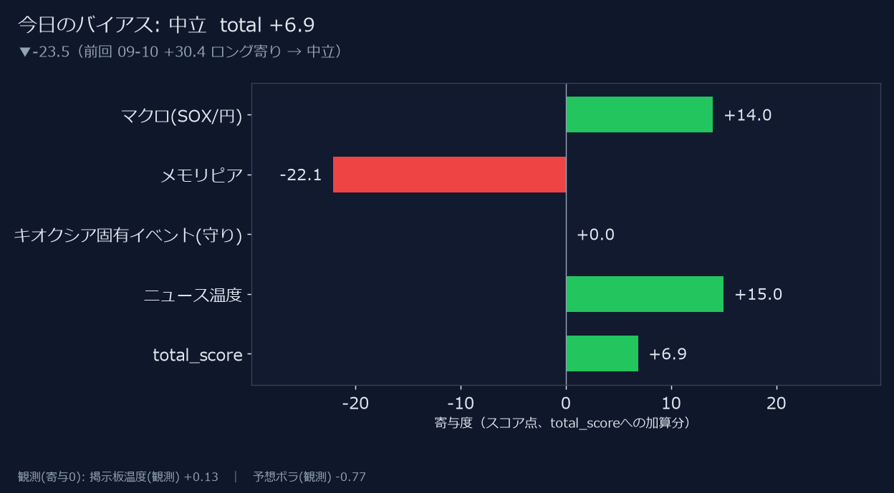
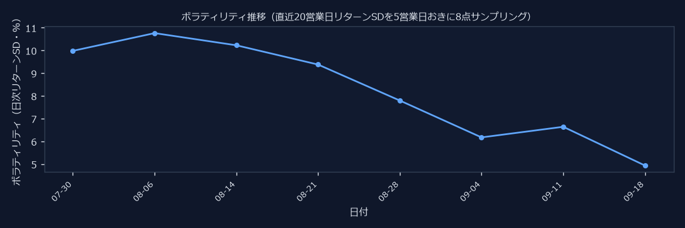
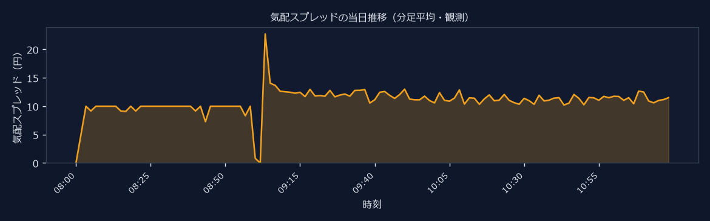
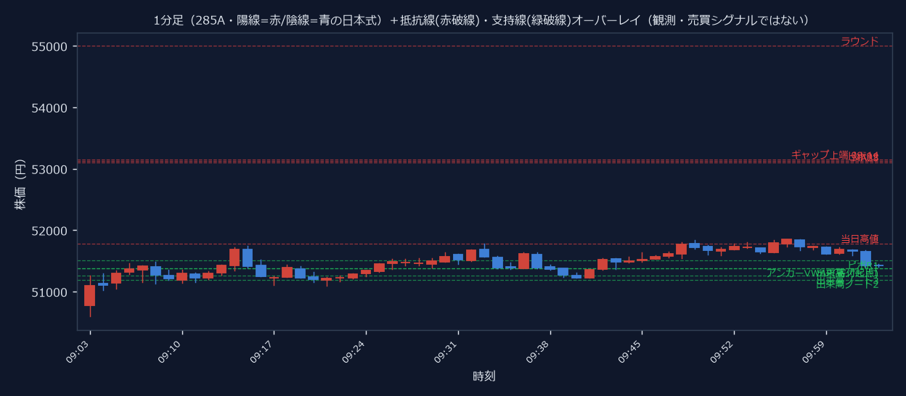
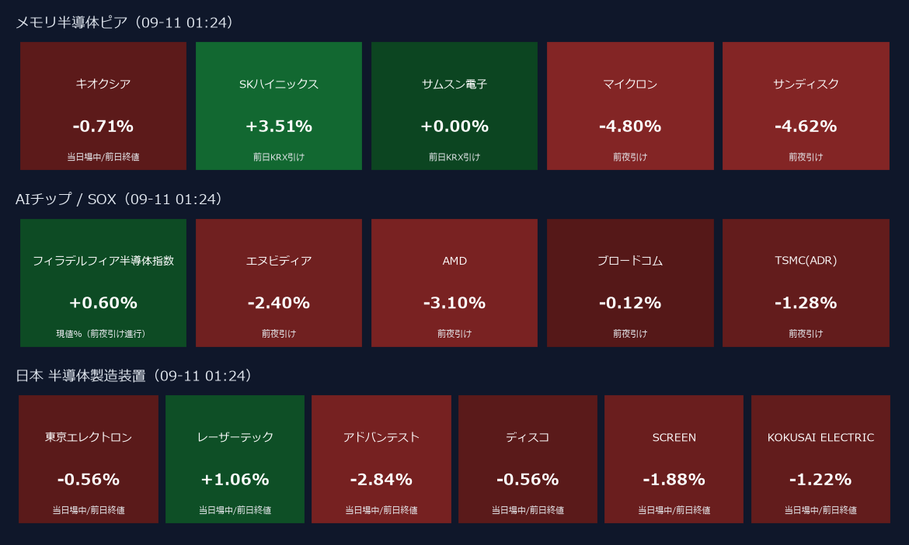
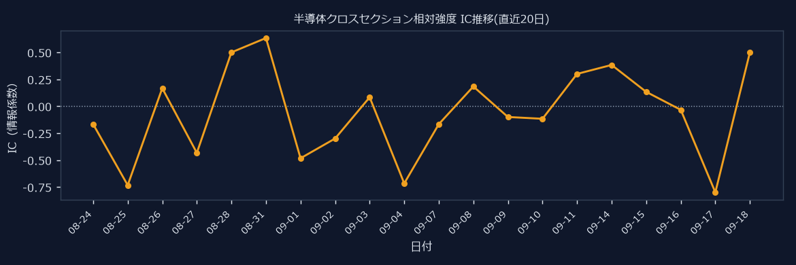
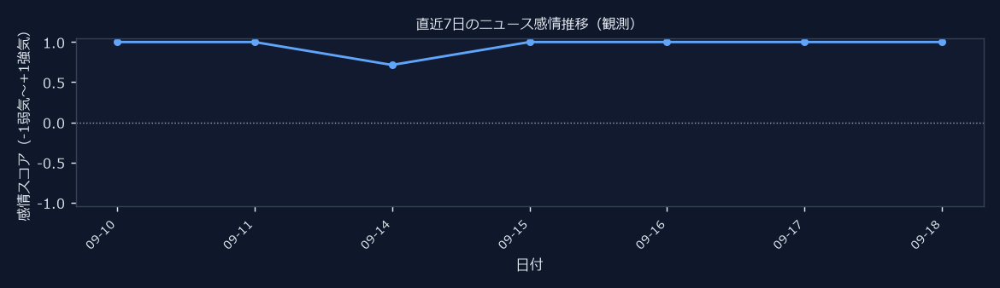
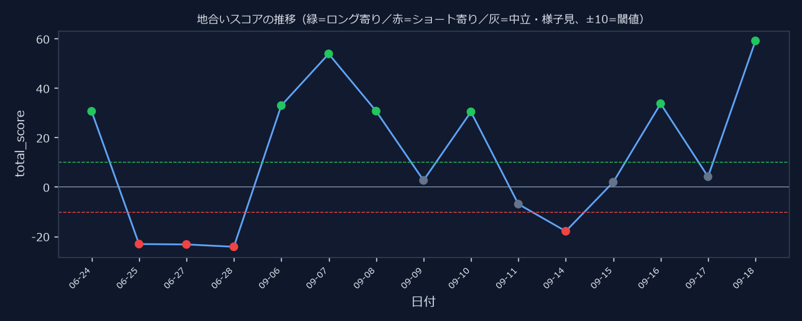

👀 累計閲覧数: 59

| 軸 | subscore | weight | 寄与 |
|---|---|---|---|
| マクロ(SOX/円) | 0.3997 | 0.35 | +13.99 |
| メモリピア | -0.7375 | 0.3 | -22.12 |
| キオクシア固有イベント(守り) | 0.0 | 0.2 | +0.00 |
| ニュース温度 | 1.0 | 0.15 | +15.00 |
| 掲示板温度(観測) | 0.1324 | 0.0 | +0.00 |
| 予想ボラ(観測) | -0.7701 | 0.0 | +0.00 |
| 項目 | 値% | weight | 寄与 | 時点/注記 |
|---|---|---|---|---|
| SOX指数（フィラデルフィア半導体） | +0.60% | 0.3 | +0.181 | 現値%（前夜引け進行） · 09-11 01:24 |
| マイクロン（MU） | -4.80% | 0.15 | -0.719 | 前夜引け · 09-11 01:24 |
| エヌビディア（NVDA） | -2.40% | 0.15 | -0.359 | 前夜引け · 09-11 01:24 |
| サンディスク（SNDK） | -4.62% | 0.15 | -0.693 | 前夜引け · 09-11 01:24 |
| ドル円（USD/JPY） | +0.50% | 0.15 | +0.075 | 夜間変化%（円安=+寄与） · 09-11 01:24 |
| 米10年金利（^TNX） | +1.84% | -0.1 | -0.184 | 10年金利(1/10正規化)前日比%・上昇=逆風 · 09-11 01:24 |
| 寄り前気配（中値） | 56,805.0 |
| 前日終値 | 57,000.0 |
| 気配ギャップ | -0.34% |
| 板優勢 | 売り優勢 |
| 買い注文（板の厚み） | 199,800 |
| 売り注文（板の厚み） | 198,400 |
| 買い成行超過 | 825,200 |
| 売り成行超過 | 1,325,600 |
| 板優勢 | 拮抗 |
| 上値抵抗（価格が高い順） | |||
|---|---|---|---|
| ギャップ上端 09-07 | 57,650.0 | +1.14% | +0.16SD |
| 前日終値 | 57,410.0 | +0.72% | +0.10SD |
| 出来高ノード3 | 57,345.8 | +0.61% | +0.08SD |
| 出来高ノード2 | 57,211.2 | +0.37% | +0.05SD |
| 出来高ノード1 | 57,076.8 | +0.13% | +0.02SD |
| 下値支持（価格が高い順） | |||
|---|---|---|---|
| アンカーVWAP(寄付起点) | 56,832.1 | -0.29% | -0.04SD |
| 当日安値 | 56,020.0 | -1.72% | -0.24SD |
| ピボS1 | 55,953.3 | -1.84% | -0.26SD |
| ギャップ下端 09-07 | 55,200.0 | -3.16% | -0.44SD |
| ラウンド | 55,000.0 | -3.51% | -0.49SD |

| 銘柄 | 約定率 | 約定まで(中央) |
|---|---|---|
| 285A | 92.3% | 0.6秒 |
| 6146 | 70.0% | 5.7秒 |
| 6920 | 83.3% | 6.0秒 |
| 8035 | 66.7% | 7.7秒 |
| 指標 | サイン | 値 |
|---|---|---|
| 25日vs75日線 | 🔴 | -14044.667 |
| 5日vs25日(GC/DC) | 🟢 | 3412.0 |
| ADX/DI方向 | ⚪ | 16.199 |
| CCI(20) | ⚪ | 90.129 |
| CMF(20) | ⚪ | -0.045 |
| MACDヒスト | 🟢 | 1313.283 |
| MFI(14) | ⚪ | 49.454 |
| OBV傾き(5本) | 🟢 | 19141200.0 |
| RSI(14) | ⚪ | 53.375 |
| Williams%R | ⚪ | -26.826 |
| ストキャス | 🔴 | 82.396 |
| スーパートレンド | 🔴 | -1 |
| パラボリックSAR | 🟢 | 46847.552 |
| ボリンジャー%b | ⚪ | 0.761 |
| 一目雲位置 | 🔴 | 57000.0 |
| 価格vs25日線 | 🟢 | 57000.0 |
| スパン別スコア | 短期(5営業日足換算) | 中期(20営業日足換算) | 長期(60営業日足換算) |
|---|---|---|---|
| 合成スコア | 中立(+0) | 中立(+1) | やや強気(+2) |
| 指標 | 短期(5営業日足換算) | 中期(20営業日足換算) | 長期(60営業日足換算) |
|---|---|---|---|
| 価格vs25日線 | 🟢 | — | — |
| 25日vs75日線 | — | — | — |
| 5日vs25日(GC/DC) | 🔴 | — | — |
| MACDヒスト | 🔴 | — | — |
| ADX/DI方向 | 🟢 | — | — |
| スーパートレンド | 🔴 | 🟢 | — |
| パラボリックSAR | 🔴 | 🔴 | 🟢 |
| 一目雲位置 | — | — | — |
| RSI(14) | ⚪ | — | — |
| ストキャス | ⚪ | — | — |
| CCI(20) | ⚪ | — | — |
| Williams%R | ⚪ | — | — |
| ボリンジャー%b | ⚪ | — | — |
| OBV傾き(5本) | 🟢 | 🟢 | 🟢 |
| CMF(20) | 🟢 | — | — |
| MFI(14) | ⚪ | — | — |


| 節目 | 価格 | 現在値比 |
|---|---|---|
| 心理節目 58,000 | 58,000.0 | -0.15% |
| 本日高値 | 58,220.0 | +0.22% |
| 心理節目 59,000 | 59,000.0 | +1.57% |
| 前日終値 | 57,000.0 | -1.88% |
| 心理節目 57,000 | 57,000.0 | -1.88% |
| 本日始値 | 56,980.0 | -1.91% |
| 心理節目 60,000 | 60,000.0 | +3.29% |
| 心理節目 56,000 | 56,000.0 | -3.60% |
| 本日安値 | 55,530.0 | -4.41% |
| 高値時刻 | 15:17 |
| 安値時刻 | 10:11 |
| 終値位置(0=安値引け・1=高値引け) | 0.95 |
| 日中値幅% | 4.72% |
| 寄りギャップ% | -0.04% |
| 型 | 日数 | 割合 |
|---|---|---|
| A（寄り天・終日下落） | 14 | 26.9% |
| B（寄り底・終日上昇） | 10 | 19.2% |
| C（寄り天だが戻す（往復）） | 7 | 13.5% |
| D（寄り底だが落とす（往復）） | 6 | 11.5% |
| E（終日レンジ（値幅小）） | 1 | 1.9% |
| F（日中で天底（後場転換型）） | 14 | 26.9% |
| 型 | 意味 |
|---|---|
| A（寄り天・終日下落） | 寄り30分で高値を付け、その後は戻せずに安値圏で引ける（終日下落）。 |
| B（寄り底・終日上昇） | 寄り30分で安値を付け、その後は下げずに高値圏で引ける（終日上昇）。 |
| C（寄り天だが戻す（往復）） | 寄り30分で高値を付けた後、下げきらずに上へ戻る（切り返す）＝往復型。 |
| D（寄り底だが落とす（往復）） | 寄り30分で安値を付けた後、上げきらずに下へ落ちる（切り返す）＝往復型。 |
| E（終日レンジ（値幅小）） | 高値・安値とも寄り30分より後だが、値幅自体が小さく方向感が乏しい。 |
| F（日中で天底（後場転換型）） | 高値・安値とも寄り30分より後で、値幅も小さくない＝日中で流れが転換した日。 |

| 銘柄 | 価格 | 騰落% | データ時点 |
|---|---|---|---|
| キオクシア 285A.T | 57,000.0 | -0.71% | 当日場中/前日終値 |
| SKハイニックス 000660.KS | 1,856,000.0 | +3.51% | 前日KRX引け |
| サムスン電子 005930.KS | 269,500.0 | +0.00% | 前日KRX引け |
| マイクロン MU | 978.5 | -4.80% | 前夜引け |
| サンディスク SNDK | 1,682.7 | -4.62% | 前夜引け |
| 銘柄 | 価格 | 騰落% | データ時点 |
|---|---|---|---|
| フィラデルフィア半導体指数 ^SOX | — | +0.60% | 現値%（前夜引け進行） |
| エヌビディア NVDA | 218.3 | -2.40% | 前夜引け |
| AMD AMD | 504.9 | -3.10% | 前夜引け |
| ブロードコム AVGO | 363.9 | -0.12% | 前夜引け |
| TSMC(ADR) TSM | 429.8 | -1.28% | 前夜引け |
| 銘柄 | 価格 | 騰落% | データ時点 |
|---|---|---|---|
| 東京エレクトロン 8035.T | 53,700.0 | -0.56% | 当日場中/前日終値 |
| レーザーテック 6920.T | 35,280.0 | +1.06% | 当日場中/前日終値 |
| アドバンテスト 6857.T | 32,840.0 | -2.84% | 当日場中/前日終値 |
| ディスコ 6146.T | 53,590.0 | -0.56% | 当日場中/前日終値 |
| SCREEN 7735.T | 13,020.0 | -1.88% | 当日場中/前日終値 |
| KOKUSAI ELECTRIC 6525.T | 8,675.0 | -1.22% | 当日場中/前日終値 |
| AMD | — |
| AVGO | — |
| MU | — |
| NVDA | — |
| SNDK | — |
| TSM | — |
| D+1 | D+2 | |
|---|---|---|
| 285A | — | — |
| 4062 | — | — |
| 4063 | — | — |
| 6146 | — | — |
| 6526 | — | — |
| 6723 | — | — |
| 6857 | — | — |
| 6920 | — | — |
| 6963 | — | — |
| 7735 | — | — |
| 8035 | — | — |
| 銘柄 | 個人シェア | 個人ネット |
|---|---|---|
| 285A | — | — |
| 8035 | — | — |
| 6920 | 9.3% | +1.5% |
| 6857 | 3.5% | +1.3% |
| 6146 | — | — |
| 7735 | 26.0% | -5.1% |
| 6525 | 48.3% | -7.7% |

| 2026-09-28 | 株式分割(1→3)の権利付最終売買日 📇 指数 ⚡ボラ警戒 翌2026-09-29が権利落ち日(この日から分割後の値段で取引)。基準日2026-09-30。分割前後で個人の買い需要・出来高が変動しやすい節目。 |
| 2026-10-01 | 株式分割(1株→3株)効力発生日 📇 指数 ⚡ボラ警戒 2026-07-31発表。基準日2026-09-30、効力発生日2026-10-01、権利付最終売買日2026-09-28。最低投資金額(400万円超)引き下げが目的。分割後は株価・出来高・板の見え方が変わるため、価格ベースの閾値やチャート比較は分割調整の要否を要確認。 |
| 2026-09-30 | マイクロン MU ⚡ボラ警戒 FY2026 第4四半期(引け後・米山岳時間14:30=日本時間10/01 05:30)。会社ガイダンスは四半期売上約500億ドル・非GAAP EPS約31ドル。NAND/DRAM/HBMガイダンスがメモリピア(285A)の地合いに直結。Micron IRで確定済(2026-08-26発表)。 |
| 2026-10-08 | サムスン電子(2026 Q3 暫定実績) 005930.KS ⚡ボラ警戒 要確認/概算: 暫定実績(売上・営業利益のみ)は例年10月上旬(Q2 2026は07-07、Q3 2024は10-08)。日付は概算で、Samsung Newsroom(Earnings Guidance)で確定後に更新。 |
| 2026-09-11 | 米CPI(8月分) BLS発表 08:30 ET(日本時間9/11 21:30)。bls.gov/schedule/2026で確定。 |
| 2026-09-16 | FOMC(9月会合・経済見通し/ドットプロット回) 会合9/15-16。SEP公表回。声明は日本時間9/17未明。金利方向(^TNX/DGS2)で地合いに寄与。利下げ確率は作らない(会合日カウントダウンと金利方向のみ)。federalreserve.govで確定。 |
| 2026-09-18 | 日銀 金融政策決定会合(9月会合・2日目/結果発表) 会合9/17-18。展望レポートなし。結果は会合2日目昼頃、総裁会見15:30。円金利・為替経由で半導体株の地合いに影響。boj.or.jpで確定。 |
| 2026-10-02 | 米雇用統計(9月分) BLS発表 08:30 ET(日本時間10/2 21:30)。bls.gov/schedule/2026で確定。8月分は9/4に発表済。 |
| ドル円(USD/JPY) | 154.25円 （+0.50%） |
| 米10年金利(^TNX) | 4.93% （+8.9bp） |
| 米2年金利(DGS2) | — （FRED DGS2(鍵未設定・欠損)） |
| 次回FOMCまで | 6日（2026-09-16） |

| 🔴 | ・ Nvidia, Samsung team up to develop next-gen NAND memory chips: report - Seeking Alpha Google News(EN semiconductor) 10pt キオクシア:low [Samsung][NAND][NVIDIA][Nvidia] Nvidia, Samsung team up to develop next-gen NAND memory chips: report Seeking Alpha |
| 🔴 | ・ $キオクシアホールディングス (285A.JP)$ AppleがNANDフラッシュメモリについて長期供給契約を締結し、そ... - Moomoo Google News(メモリ半導体) 9pt キオクシア:high [キオクシア][285A][NAND][NANDフラッシュ] $キオクシアホールディングス (285A.JP)$ AppleがNANDフラッシュメモリについて長期供給契約を締結し、そ... Moomoo |
| 🔴 | ・ キオクシア、高速NANDメモリーでDRAM代替めざす AI需要に対応 - 日本経済新聞 Google News(メモリ半導体) 8pt キオクシア:high [キオクシア][NAND][DRAM][メモリ] キオクシア、高速NANDメモリーでDRAM代替めざす AI需要に対応 日本経済新聞 |
| 🔴 | ・ Samsung、高NA EUVをDRAM量産に「業界初」導入へ 28年までに：TSMCは30年に先端ノードで導入（1/2 ページ） - eetimes.itmedia.co.jp Google News(メモリ半導体) 8pt キオクシア:low [Samsung][DRAM][TSMC][EUV] Samsung、高NA EUVをDRAM量産に「業界初」導入へ 28年までに：TSMCは30年に先端ノードで導入（1/2 ページ） eetimes.itmedia.co.jp |
| 🔴 | ・ Samsung ElectronicsのDRAMシェア40%に迫る…Micron、SK hynixに1.6pt差まで追撃 - BigGo ファイナンス Google News(メモリ半導体) 8pt キオクシア:low [Micron][SK Hynix][Samsung][DRAM] Samsung ElectronicsのDRAMシェア40%に迫る…Micron、SK hynixに1.6pt差まで追撃 BigGo ファイナンス |
| 🔴 | － 4-6月期のDRAM売上、米マイクロンが売り上げ成長率でサムスン・SKハイニックス上回る―サーバー向け製品が寄与 - 財経新聞 Google News(メモリ半導体) 8pt キオクシア:low [マイクロン][SKハイニックス][サムスン][DRAM] 4-6月期のDRAM売上、米マイクロンが売り上げ成長率でサムスン・SKハイニックス上回る―サーバー向け製品が寄与 財経新聞 |
| 🔴 | ・ DRAM／SSDの課題解決 キオクシアの最新フラッシュメモリ技術：FMS展示内容を紹介（1/2 ページ） - eetimes.itmedia.co.jp Google News(キオクシア) 7pt キオクシア:high [キオクシア][DRAM][SSD][メモリ] DRAM／SSDの課題解決 キオクシアの最新フラッシュメモリ技術：FMS展示内容を紹介（1/2 ページ） eetimes.itmedia.co.jp |
| 🔴 | ・ マイクロン、エヌビディアと大違い トレンドを読めないニッポン半導体がDRAMで失敗した理由 - JBpress Google News(メモリ半導体) 7pt キオクシア:low [マイクロン][DRAM][エヌビディア][半導体] マイクロン、エヌビディアと大違い トレンドを読めないニッポン半導体がDRAMで失敗した理由 JBpress |
| 🔴 | ＋ ASMLの最先端半導体製造装置、サムスンとTSMCも導入－業界で採用拡大 - TBS NEWS DIG Google News(製造装置) 7pt キオクシア:low [サムスン][TSMC][ASML][半導体] ASMLの最先端半導体製造装置、サムスンとTSMCも導入－業界で採用拡大 TBS NEWS DIG |
| 🔴 | ・ Memory prices tipped to fall as China starts flooding the market with DRAM and NAND chips - TechSpot Google News(EN semiconductor) 7pt キオクシア:low [NAND][DRAM][chip][China] Memory prices tipped to fall as China starts flooding the market with DRAM and NAND chips TechSpot |
| 🔴 | ・ キオクシア、SKハイニックスとの共同生産説を一蹴··· 独占禁止法・サンディスクとの協力に支障 - 아주경제 Google News(キオクシア) 6pt キオクシア:high [キオクシア][サンディスク][SKハイニックス] キオクシア、SKハイニックスとの共同生産説を一蹴··· 独占禁止法・サンディスクとの協力に支障 아주경제 |
| 🔴 | ・ キオクシアCEO、NAND価格は「もう十分に上がった」と明言 SKハイニックスとの共同生産は否定 - BigGo ファイナンス Google News(キオクシア) 6pt キオクシア:high [キオクシア][SKハイニックス][NAND] キオクシアCEO、NAND価格は「もう十分に上がった」と明言 SKハイニックスとの共同生産は否定 BigGo ファイナンス |
| 🔴 | ・ 【福田昭のセミコン業界最前線】NAND積層でHBM超えの大容量、SandiskのHBFが推論GPUを半減 - PC Watch Google News(メモリ半導体) 6pt キオクシア:low [SanDisk][NAND][HBM] 【福田昭のセミコン業界最前線】NAND積層でHBM超えの大容量、SandiskのHBFが推論GPUを半減 PC Watch |
| 🔴 | ＋ NAND価格、4－6月期にも55％上昇…サムスン、ハイニックスが1・2位維持、中国長江メモリが4位浮上（中央日報日本語版） - Yahoo!ニュース Google News(メモリ半導体) 6pt キオクシア:low [サムスン][NAND][中国][メモリ] NAND価格、4－6月期にも55％上昇…サムスン、ハイニックスが1・2位維持、中国長江メモリが4位浮上（中央日報日本語版） Yahoo!ニュース |
| 🔴 | ・ DRAMを作らないキオクシアの株がなぜ上がる？AI時代にSSDが重宝される理由 - PC Watch Google News(メモリ半導体) 6pt キオクシア:high [キオクシア][DRAM][SSD] DRAMを作らないキオクシアの株がなぜ上がる？AI時代にSSDが重宝される理由 PC Watch |
| 🔴 | ・ SKハイニックス、2028年のDRAM工程にASML次世代露光装置を導入 - 아주경제 Google News(メモリ半導体) 6pt キオクシア:low [SKハイニックス][DRAM][ASML] SKハイニックス、2028年のDRAM工程にASML次世代露光装置を導入 아주경제 |
| 🔴 | ・ Kioxia All Set to Raise the NAND Game in AI SSDs - EE Times Google News(EN semiconductor) 6pt キオクシア:high [Kioxia][NAND][SSD] Kioxia All Set to Raise the NAND Game in AI SSDs EE Times |
| 🔴 | ・ AI Memory Boom Tightens NAND and DRAM Supply, Forcing Capacity Reallocation Across Semiconductor Production - Astute Group Google News(EN semiconductor) 6pt キオクシア:low [NAND][DRAM][semiconductor][memory] AI Memory Boom Tightens NAND and DRAM Supply, Forcing Capacity Reallocation Across Semiconductor Production Astute Group |
| 🔴 | ・ Samsung Electronics, SK hynix poised to ride AI boom as memory chip sales seen surging 280% - 헤럴드경제 Google News(EN semiconductor) 6pt キオクシア:low [SK Hynix][Samsung][chip][memory] Samsung Electronics, SK hynix poised to ride AI boom as memory chip sales seen surging 280% 헤럴드경제 |
| 🔴 | ・ Huawei unveils new optical tech standard in challenge to Nvidia, Broadcom Nikkei Asia 6pt キオクシア:low [NVIDIA][Nvidia][Broadcom] |

| 日付 | バイアス | total |
|---|---|---|
| 2026-09-10 | ロング寄り | +30.4 |
| 2026-09-09 | 中立 | +2.6 |
| 2026-09-08 | ロング寄り | +30.7 |
| 2026-09-07 | ロング寄り | +53.9 |
| 2026-09-06 | ロング寄り | +32.9 |
| 2026-06-28 | ショート寄り | -24.2 |
| 2026-06-27 | ショート寄り | -23.3 |
| 2026-06-25 | ショート寄り | -23.1 |
| 2026-06-24 | ロング寄り | +30.6 |
| 日付 | 予測 | 予測ギャップ | 実績ギャップ | 判定 |
|---|---|---|---|---|
| 2026-09-08 | up | +2.87% | -1.71% | ×不的中 |
| 2026-09-09 | down | -0.26% | +0.16% | ×不的中 |
| 2026-09-10 | up | +0.41% | -0.04% | ×不的中 |
| 2026-09-11 | down | -1.58% | — | — |
| バイアス | 件数 | 平均リターン |
|---|---|---|
| ロング寄り | 3 | -0.22% |
| 中立 | 1 | +1.95% |
| 週(申込日) | 信用買残 | 信用売残 | 倍率 |
|---|---|---|---|
| 2026-09-04 | 13,506,700 | 1,014,400 | 13.3倍 |
| 2026-08-28 | 16,165,800 | 457,100 | 35.4倍 |
| 2026-08-21 | 13,289,500 | 768,200 | 17.3倍 |
| 2026-08-14 | 12,103,500 | 769,500 | 15.7倍 |
| 2026-08-07 | 13,231,000 | 556,200 | 23.8倍 |
| 2026-07-31 | 12,321,600 | 544,600 | 22.6倍 |
| メモリ | キオクシア 四日市工場 | キオクシア(285A)/サンディスク主力NAND拠点。世界最大級のNAND生産。BiCS FLASH量産の中核 |
| メモリ | キオクシア 北上工場 | キオクシアの新世代NAND(BiCS第8世代)増強拠点。岩手県北上市 |
| メモリ | SKハイニックス 利川 | SKハイニックスの主力DRAM/HBM拠点。AI向けHBMで世界首位級 |
| メモリ | サムスン 華城(ファソン) | サムスン電子のメモリ/ファウンドリ拠点。DRAM・NAND・ロジック |
| メモリ | サムスン 平沢(ピョンテク) | サムスン最大級メモリ拠点。先端DRAM/NAND/HBM増強 |
| メモリ | マイクロン 広島工場 | マイクロンの先端DRAM拠点(日本)。EUV導入のDRAM量産 |
| メモリ | マイクロン 本社/ボイシ | マイクロン(MU)本社・米国DRAM拠点。NAND/DRAMピア |
| ファウンドリ | TSMC 新竹 | TSMC本拠・先端ロジックの中核。AIチップ(NVIDIA/AMD)を受託製造 |
| ファウンドリ | TSMC 熊本(JASM) | TSMCの日本ファウンドリ(JASM)。ソニー/デンソー連携。第2工場計画 |
| ファウンドリ | TSMC アリゾナ | TSMC米国拠点。先端ノードの域内供給 |
| ファウンドリ | インテル ファウンドリ | インテルのファウンドリ事業。先端ロジック内製/受託 |
| equipment | ASML フェルトホーフェン | EUV露光装置の独占供給(オランダ)。先端半導体製造の死活的ボトルネック |
| equipment | 東京エレクトロン(8035) | 成膜/エッチング等の製造装置大手(日本)。SPEヒートマップの中核銘柄 |
| equipment | アプライド・マテリアルズ | 米製造装置最大手。WFE市況のバロメーター |
| equipment | レーザーテック(6920) | EUVマスク検査で独占的(日本)。SPE銘柄 |
| equipment | アドバンテスト(6857) | 半導体テスタ大手(日本)。AI/HBMテスト需要で注目。SPE銘柄 |
| データセンター | NVIDIA 本社 | AI GPU設計の中核(米サンタクララ)。AIチップ需要の震源 |
| チョークポイント | 台湾海峡 | 先端半導体供給の地政学的要衝。封鎖/緊張は全AI半導体に波及するチョークポイント |
| チョークポイント | マラッカ海峡 | 東アジア半導体サプライチェーンの海上物流要衝 |
| geopolitics | 米中 半導体規制(対中輸出規制) | 対中先端半導体/装置の輸出規制。需給・各社売上の地政学リスク軸 |